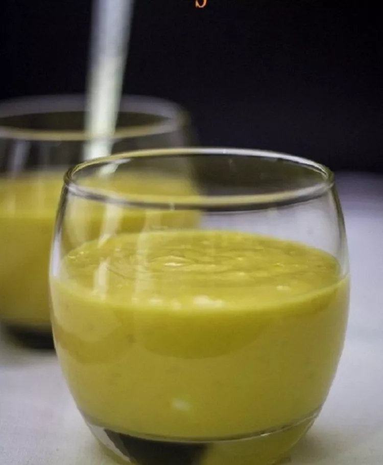

Mango Lassi

Mango lassi is very rich and luxurious drink with yogurt and mangoes. It is the perfect summer drink when served chilled.
Ingredients
- 1 1/2 cups mangos - peeled, seeded, chopped, and chilled
- 1 1/2 cups plain yogurt
- 1/2 cup cold milk
- 2 tablespoons heavy cream
- 2 tablespoons confectioners' sugar
- 1/2 teaspoon ground cardamom
Steps
- Combine mangos, yogurt, milk, cream, confectioners' sugar, and cardamom in a blender;
blend until smooth and frothy. Pour into glasses and serve immediately.
Home